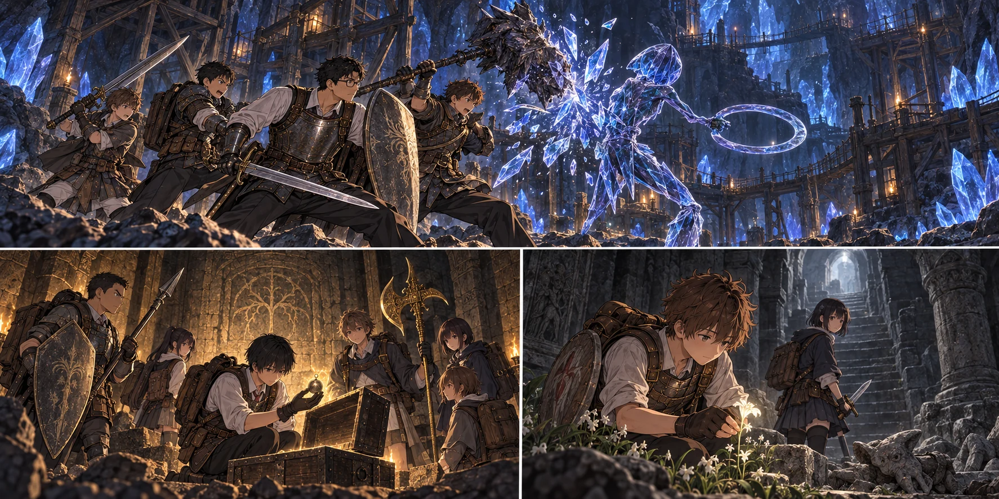

DAY94 / TURN1−104
遠回りを、二日で終わらせる。

三上 蓮：帰る理由があるうちに帰ろう。
【DAY94｜朝、残り六日】先生は手帳の「もう一度挑む」を線で囲み、その前に二日分の空白を取った。時間がないからこそ、同じ剣で同じ王へ戻るわけにはいかない。昨夜持ち帰った刃を皆の前へ置く。使い込んだ柄に比べ、強化の数字だけが取り残されていた。
「身体は鍛えた。けれど、武器を育てる段取りは私が遅らせた」。誰かのせいにせず言うと、直人が大竜爪を足元へ下ろした。「じゃあ、今日は取り戻す日ですね」。先生は頷いた。第一隊と自分で結晶坑道。第二隊は封印された坑道。第三隊は小さな採取と、イジーへの買付。どの隊も、目的の先へ欲張って進まない。
【攻略サイト先読み】鈴玉一は、結晶人が持つ。二は入口側の宝箱。三は雪の廃墟の地下。先生は場所だけでなく、何をしなくてよいかを三枚の紙へ書いた。封印された坑道の主を倒す必要はない。墓すずらんを一株取るために、地下墓を制覇する必要もない。明日の仕事まで今日の予定に詰めない。
【第一隊｜坑道まで：2d6＝1・3＋5＝9】七人は自分たちが登録した討論室へ戻り、通ってきた学院の道を抜けて湖へ下りた。薄い霧の向こうで、塔は昨日と同じ場所に立っている。地図上の線が短くても、その間にいる坑夫まで消えるわけではなかった。
坑道の入口で祝福を解放し、一人ずつ到達を刻む。青い鉱石の灯りの奥で、つるはしの音が止んだ。曲がり角の敵を避け切れず、先生が盾で受けて肩を打った。花の四本の矢が追撃を止める。赤瓶を一つ使い、先生は先へ進む。「ここでも、油断したら当たるな」。
直人は、大竜爪の先が岩壁に触れないよう持ち直した。普段なら味方の槍先と重ならない広さを探す。ここでは天井の低さまで考えなければならない。腕力が増しても、振れる場所が増えるわけではない。陸が壁から半歩離れ、直人へ通り道を渡した。
【結晶人｜2d6＝6・6＋6＝18】輪の刃を握る青い人影が、滑るように動いた。剣先が硬い身体を擦る。先生は深追いせず、盾の縁で輪刃を逃がして横へ回った。「直人、こっちへ向けた」。
大竜爪が落ちた。石を砕く音に似ていたが、ひびはまだ浅い。結晶人が直人を向こうとしたところへ、陸が大剣の重さを乗せる。先生が次の輪刃を引き受け、花は味方が離れた線へだけ矢を送った。悠の礫が動き出しを遮る。七人が一度に押し寄せず、敵が立て直す前に次の者が届く。
二度目の衝撃で、青い身体に走ったひびが肩まで達した。直人は手応えの変化を掌で知った。硬かったものが、崩れるものになる。そこで初めて先生の剣も深く入った。最後の輪刃が床を転がり、坑道に残ったのは荒い息だけだった。
「あの王にも、同じように通ればな」。陽太が言うと、直人は首を振った。「硬い相手に向いた武器だった。王の足は、これで止まるとは限らない」。勝った直後に、勝ち方を混同しない。先生はそれを聞いて、手帳を閉じた。教える前に、生徒の口から出た言葉だった。
鈴玉と三百ルーンを持ち帰る。最初から強化された武器で倒したことにはしない。大竜爪はまだ無強化、先生の剣もまだ＋三だった。それでも、覚えた間合いと役割は、入口で立ち尽くしていた頃とは違っていた。
【第二隊｜2d6＝3・6＋4＝13】同じ頃、蓮は封印された坑道の壁へ手を当てていた。既存の外郭の祝福から、歩いてここまで来た。先生の紙には、奥の敵の名前より先に、幻の壁の見分け方が書かれていた。
壁の向こうに道が現れた。健太は盾を構えたまま、千夏を前へ出さない。大地は黄金のハルバードを低く持ち、側面を見ている。箱の蓋を上げた蓮が、小さな鈴玉を指で挟んだ。「これで終わり。奥は見ない」。
さらに下へ続く道から、金属を引きずる音がした。強くなったから確かめたくなる。その気持ちを、蓮も知っていた。だが今日は取りに来た物を持っている。「帰る理由があるうちに帰ろう」。六人は入口で登録した祝福まで戻った。翌日の雪山は、別の仕事として残した。
【第三隊｜墓すずらん：2d6＝6・1＋3＝10】教会から遠くない地下墓の入口で、翼は一度、皆を止めた。階段の先に見える小さな影だけでなく、入口の左も見る。先読みの紙にある待ち伏せを、現地でも確かめる。
石の小悪魔が跳んできた。翼の盾へ爪が鳴り、真央が脇から剣を入れた。航は敵の身体が味方と重ならない瞬間を二度選ぶ。二体が動かなくなるまで、凛と佑真は後ろの階段を空けていた。
白い花は、思っていたより小さかった。湊が根元まで見て、墓すずらんの一と確かめる。「この一株で、あの子が少し長く残れるかもしれない」。翼は花を摘む手を急がせなかった。奥から聞こえる火の音へは向かわず、入口の未解放祝福を予備として記録して引き返す。
教会へ花を納めてから、第三隊は既登録の城の小部屋へ飛んだ。裏口からリエーニエへ出て、湖岸の大きな影を避け、西の街道を北へ歩く。行ったことのない城館への道へ、先生の記録だけで飛ぶことはできない。
【第三隊｜街道：2d6＝1・5＋3＝9】午後の霧が道標を隠した。岸へ降りれば短く見える。だが水際で動く影は、人より大きかった。翼は地図を折り直した。「今日は、ここまで」。買付金は袋の中に残ったままだった。
凛が、確認できた曲がり角と戻る道を記す。「明日は、ここまでは迷わない」。失敗した買い物の報告ではなく、翌日の出発点になる報告だった。六人は日没を追いかけず、来た道を戻って城から教会へ帰った。
【教会｜2d6＝6・3＋4＝13】亮たち六人は近場の狩りで三十六食分を確保し、残る八人が火と水と見張りを受け持った。皆が遠くで戦う日に、自分たちの仕事が夕食になる。結衣は戻った順に器を渡し、食べながら話せる場所を空けた。
先生は二つの鈴玉と、一株の白い花を並べた。第三隊の買付金四千三百は、使わず返ってきた。遅れたことを叱る代わりに、明日の道を一緒に確かめる。翼は、花の包みだけを最後まで見ていた。「クララの分は、間に合いました」。
「ああ。ありがとう」。先生はその包みを自分の袋へ入れた。あの青い影が消えるたび、人を守るための一回分と数えていた。けれどその一回を支えるものにも、誰かの手が届く。明日はローデリカに、こちらからお願いをしよう。
【DAY94終了】新しい死者は出なかった。全三十三人が教会で休息。鈴玉一と二は取得済みで、円卓への奉納と強化は明日。墓すずらんは一株、クララはまだ未強化。残金四万五千五百二十ルーン、矢四百二本、食料五十六食。雪山の箱と、イジーの鍛冶台が残っている。
今回の判定記録
| 判定 | 出目 | 補正 | 合計 |
|---|
| aTunnel | 1+3 | 5 | 9 |
| crystalian | 6+6 | 6 | 18 |
| bSealed | 3+6 | 4 | 13 |
| cGlovewort | 6+1 | 3 | 10 |
| cRoad | 1+5 | 3 | 9 |
| base | 6+3 | 4 | 13 |
抽選前の条件 · 抽選結果